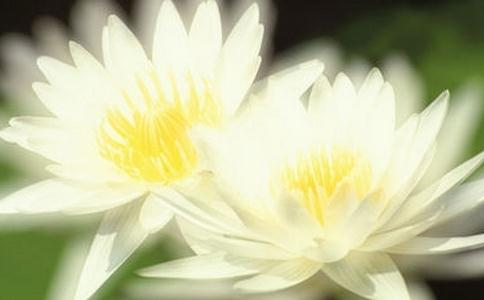

引言 “环保”是当前国际社会最关注的课题,也是关系着我们人类生存的根本保证。“生态环保”是社会的和谐和世界和平的主要因素,生态环境的不断破坏,不仅加剧了自然灾害的增多,同时也造成了人类社会战争的起因。破坏了人与自然界相互生存的关系,也就破坏了人类文明的进程。本文就是想通过
《梵网经》云:“若佛子以慈心故,行放生业。一切男子是我父,一切女人是我母,我生生无不从之受生,故
明
在《放生文》中说:“盖闻世间至重者生命,天下最惨者杀伤。是故逢擒则奔,虮虱犹知避死;将雨而徙,蝼蚁尚且贪生。”通过莲池大师的《放生文》使我们明白不仅不能杀生,更应当养成放生的善良品德。对于生物界而言,世间至贵至重者莫过于生命,而天下最惨忍者要算杀生。我们人类社会之所以战争连年不断者,就是人们杀业所感。有佛教颜语:“千百年来碗里羹,怨深似海恨难平,欲知世间刀兵劫,但听屠门夜半声。”从佛教因果理论讲,我们世间的战争就是人们的杀业所感。虽然这话人们不易明白,但从人与人、人与动物、动物与动物、人与自然等,相互之间的生物链的关系而言并不无道理。人对动物的残杀破坏了自然生态的平衡,使得人与人之间为了争夺生存空间,自然就发生了人与人之间的战争。因此,戒杀放生不再仅仅是佛教徒的慈悲表现了,而应当应用到当前社会的环境保护与生态文明中,通过佛教的戒杀放生理念来推动社会的生态环保
《放生文》又云:“怜儿之鹿,舐疮痕而寸断柔肠;畏死之猿,望弓影而双垂悲泪。恃我强而陵彼弱,理恐非宜;食他肉而补己身,心将安忍?”人与动物本来应当是相互平等生存,不应当相互残杀弱肉强食,破坏自然界的生态平衡。宋代诗人陆游也说:“血肉淋漓味足珍,一般
素食主义已经不是佛教信仰者所独有,而在社会上已经有越来越多的人倡导和推行素食的健康理念。将素食理念运用到健康饮食和餐饮文化中,与中国传统文化饮食很好的结合起来,对今
经科学实验而证实,食动物肉者有六大害处:一是毒素致癌,因为动物体内含有多种毒素,当动物被屠宰时因剧烈的痛苦、恐怖而分泌出毒素以自卫;二是阻塞循环,因为动物体内的脂肪中含有大量的胆固醇,当进入人体血管中会变成一种黏稠的物质,在血管中日积月累越堆越厚,使得血管越来越窄,血管的压力加大,最后将导致心肌梗塞(心脏病)或中风(脑血管破裂)等症状。三是肾脏过劳,动物的肉中含有大量的尿素和尿酸等废物,食肉者为了排除这些氮化物,肾脏承受素食者三倍的负担,使得肉食者成了肾功能退化、肾脏病、尿毒等难治恶疾的常客。四是血糖失控,人体内的胰脏生产出来的胰岛素,遇到人吃进胃中的食物,会分泌出糖份,以利于消化食物。由于肉的酸性,需要大量的胰岛素才能够消化,因此吃肉会加重胰脏的工作负担,使胰岛素产量不够,失去控制血液中含糖量的比例,而使血糖增加到超越正常现象,就会引发糖尿病,导致身体对疾病的抵抗力衰退,最终引起种种并发症。五是病毒感染,动物一般不具有人类的卫生常识,常期食一些垃圾、粪便、废水、残饭剩菜、畜牲尸体、化学废料等。所以动物体内常常隐藏着多种病毒、传染菌、肿瘤、癌细胞,也是各类寄生虫最好的寄身繁殖之地,当人们吃动物肉时自然这些病毒也就随之进入人体。
美国医药学会曾经报导:“素食可以预防百分之九十到九十七的心脏病。”因为植物中不含任何胆固醇,反而具备粗糙的纤维质成分,在人的胃肠内扮演扫把的角色,把消化后不需要的废物一路扫到排泄器官,快速逼出体外。所以,素食不但可以防止循环系统的心脏病和中风,又能够防止排泄系统的肾结石、胆结石、膀胱结石、便秘、尿毒、盲肠炎等杂症。科学家把人吃肉称作“食物链的末端”,根据科学调查,肉类当中的杀虫剂量,比蔬菜、水果、青草中所含毒量,高出十三倍。农药是致癌的主要病因,当人们食肉时被吸收到人的体内。而吃蔬菜和水果,却可以借清洗或削皮的方法,去除农药的残毒,以避免中毒或减至最轻微的程度。
素食不仅对我们的健康有益,更是对地球的健康有益,也是关系到更多人的生命。我在网络上看到有人作了这样一个计算:生产一斤肉,需要十二斤的谷物;我们每个人对粮食的需求,一年只需200斤;而食肉者每个人每年要消耗800斤的粮食。同时肉食文化严重伤害森林,造成生物大量的灭绝!对于我们健康的有这样四句格言:药补不如食补、食补不如动补、动补不如心补。当我们少吃肉,多吃菜的时候,这个饲养牲畜的粮食量就不会这么大,粮食价格也就不会一直飞涨。对整个地球环境的温室效应也就不会阶阶高升,自然界的生物链也就不会被破坏。有一组数字写道:“一万年前地球每一百年会有一种物种消失, 一千年前每十年有一种物种消失,一百年前每一年就有一种物种消失,二十年前每一年就有五百种物种消失,五年前每一年就有两万种物消失。”自然界的物种以这样的速度消失,难道不值得人们的深思吗? 因此,素食是具备自他二利的功德,素食不仅对自身有很大益处,而且还间接有护生放生的意义,因为肉食者越少,被屠杀的动物也就会相对减少。这样就必然的对生态和自然环境起到了保护作用。
素食主义已经不是佛教信仰者所独有,而在社会上已经有越来越多的人倡导和推行素食的健康理念。将素食理念运用到健康饮食和餐饮文化中,与中国传统文化饮食很好的结合起来,对今天人们的健康饮食有很大积极影响。
经科学实验而证实,食动物肉者有六大害处:一是毒素致癌,因为动物体内含有多种毒素,当动物被屠宰时因剧烈的痛苦、恐怖而分泌出毒素以自卫;二是阻塞循环,因为动物体内的脂肪中含有大量的胆固醇,当进入人体血管中会变成一种黏稠的物质,在血管中日积月累越堆越厚,使得血管越来越窄,血管的压力加大,最后将导致心肌梗塞(心脏病)或中风(脑血管破裂)等症状。三是肾脏过劳,动物的肉中含有大量的尿素和尿酸等废物,食肉者为了排除这些氮化物,肾脏承受素食者三倍的负担,使得肉食者成了肾功能退化、肾脏病、尿毒等难治恶疾的常客。四是血糖失控,人体内的胰脏生产出来的胰岛素,遇到人吃进胃中的食物,会分泌出糖份,以利于消化食物。由于肉的酸性,需要大量的胰岛素才能够消化,因此吃肉会加重胰脏的工作负担,使胰岛素产量不够,失去控制血液中含糖量的比例,而使血糖增加到超越正常现象,就会引发糖尿病,导致身体对疾病的抵抗力衰退,最终引起种种并发症。五是病毒感染,动物一般不具有人类的卫生常识,常期食一些垃圾、粪便、废水、残饭剩菜、畜牲尸体、化学废料等。所以动物体内常常隐藏着多种病毒、传染菌、肿瘤、癌细胞,也是各类寄生虫最好的寄身繁殖之地,当人们吃动物肉时自然这些病毒也就随之进入人体。
美国医药学会曾经报导:“素食可以预防百分之九十到九十七的心脏病。”因为植物中不含任何胆固醇,反而具备粗糙的纤维质成分,在人的胃肠内扮演扫把的角色,把消化后不需要的废物一路扫到排泄器官,快速逼出体外。所以,素食不但可以防止循环系统的心脏病和中风,又能够防止排泄系统的肾结石、胆结石、膀胱结石、便秘、尿毒、盲肠炎等杂症。科学家把人吃肉称作“食物链的末端”,根据科学调查,肉类当中的杀虫剂量,比蔬菜、水果、青草中所含毒量,高出十三倍。农药是致癌的主要病因,当人们食肉时被吸收到人的体内。而吃蔬菜和水果,却可以借清洗或削皮的方法,去除农药的残毒,以避免中毒或减至最轻微的程度。
素食不仅对我们的健康有益,更是对地球的健康有益,也是关系到更多人的生命。我在网络上看到有人作了这样一个计算:生产一斤肉,需要十二斤的谷物;我们每个人对粮食的需求,一年只需200斤;而食肉者每个人每年要消耗800斤的粮食。同时肉食文化严重伤害森林,造成生物大量的灭绝!对于我们健康的有这样四句格言:药补不如食补、食补不如动补、动补不如心补。当我们少吃肉,多吃菜的时候,这个饲养牲畜的粮食量就不会这么大,粮食价格也就不会一直飞涨。对整个地球环境的温室效应也就不会阶阶高升,自然界的生物链也就不会被破坏。有一组数字写道:“一万年前地球每一百年会有一种物种消失, 一千年前每十年有一种物种消失,一百年前每一年就有一种物种消失,二十年前每一年就有五百种物种消失,五年前每一年就有两万种物消失。”自然界的物种以这样的速度消失,难道不值得人们的深思吗? 因此,素食是具备自他二利的功德,素食不仅对自身有很大益处,而且还间接有护生放生的意义,因为肉食者越少,被屠杀的动物也就会相对减少。这样就必然的对生态和自然环境起到了保护作用。
三、放生与护生理念的转换 佛教自古以来就有好生之德,比如说“救人一命胜造七级
因此,放生的
佛教提倡放生的基本精神毫无疑问是正确的,我们应当推动这种放生的理念,但要正确合理的引导和对待,对放生的时间和地点和所放生物要有选择,对放生后动物生存状况和环境要认真考虑。如果人们把放生只看成是获取个人功德的形式,丝毫不考虑放生后动物的死活以及放生行为对生态环境的影响,那这样实际上是背离了
从总的方面而言,放生带给生态环境保护的意义和价值不容忽视,我想通过这样的活动一定能够引起大家对“护生”理念的重视,把“放生”转换成“护生”。使得佛教的放生理念为社会的“环境保护”做出最大努力。在当前已经有不少大德高僧和有识之士呼吁“护生”、“环保”来取代传统的放生。像
护生与放生是大乘佛教的主要特色之一,是修菩萨行的一种主要表现手法,培养人们慈悲心和爱心的一种有力措施。“慈悲”是菩萨行的
随着社会科技事业的快速发展和市场经济的不断繁荣,虽然对人们的物质生活带来了极大丰富,但却从另一方面对人们的生存环境造成很大污染,对社会的生态平衡和自然资源的破坏加速了进程。从人文层面而言,人们精神空虚、道德沦丧、战争不断、恐怖盛行;从生物界而言,各种生物种类正以空前的速度在减少,大多数野生动物不是被人类大量捕杀,就是因人类的活动而失去了生存环境。这一切足以引起人们的极大关注和反省,人们也意识到动物是人类的朋友,对人类生存的环境有着极其重要的意义,能够调解自然界物体生存的环节。所以动物界生存的环境应当得到人类的保护,保留动物界足够的生存空间。培养人们爱护动物的理念,养成人们保护动物的爱心。伟大的科学家爱因斯坦说过:“我们的任务是要解放我们自己,这需要扩大我们同情的圈子,包容所有的生灵和美妙的大自然。”哲学家康德也说:“人必须以仁心对待动物,因为对动物残忍的人对人也会变得残忍。”印度领袖甘地也说:“从一个国家对待动物的态度,可以判断这个国家及其道德是否伟大与崇高。”
我们中国号称礼仪之邦,以仁义立国,可如今由于人们的日常生活富裕了,无论在菜市场还是超市里,人们为了求得“新鲜”,对动物常常是活刮、活剖,活杀的场面比比皆是,甚至在一些饭馆对动物活蒸、活煮,这种做法不仅造成动物的巨大痛苦,而且使动物体内的毒素释放,也损害了人们的身体健康和生命。因此,在当今的社会环境中,佛教放生护生的理念不仅没有过时,而且具有特殊而积极的意义。提倡佛教放生护生的理念,有利于引导人心向善,抑制杀戮和恐怖活动,提高公民的文明程度,建立和平、和谐的社会;同时也有利于保护生态环境,抑制不合理的大吃大喝腐败之风,改变人们的不良饮食习惯,促进人们的身心健康。从佛教
由此在今天看来,环境保护与护生放生有着非常密切的关系,我们护生放生的意义,其中很重要的一点,就是要让一切众生离苦得乐。随着工业的发展,我们身边的青山绿水越来越少了,这不仅使动物界身受其害,同时我们的身心健康也受到了严重威胁。所以维护生态物种的平衡,也是环境保护的重要举措之一。佛教倡导维护生态物种的平衡,保护环境,净